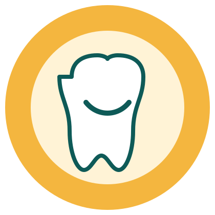

11%
dos jovens de 12 anos nunca foram ao dentista.
O Conecta do Bem reúne doadores, empresas parceiras e informações da Turma do Bem em um só lugar, para que cada apoio vire tratamento odontológico gratuito para quem mais precisa.

Dados da Pesquisa Nacional de Saúde (IBGE, 2023) mostram o tamanho do desafio.
11%
dos jovens de 12 anos nunca foram ao dentista.
14 milhões
de brasileiros perderam todos os dentes.
34 milhões
de pessoas com mais de 18 anos perderam 13 dentes ou mais.
A Turma do Bem é uma OSCIP fundada em 2002 que gerencia a maior rede de voluntariado especializado do mundo. Suas ações garantem acesso à odontologia para pessoas em situação de vulnerabilidade.
Dois programas se destacam: o Dentista do Bem, para jovens de 11 a 17 anos, e o Apolônias do Bem, para mulheres que sofreram violência e tiveram a dentição afetada.
Conheça o projetoPessoas físicas doam por PIX, boleto ou de forma recorrente, em poucos passos.
Ver como doarEmpresas conhecem os níveis de apoio e acompanham o relacionamento com a ONG.
Ver parceriasPainéis e indicadores ajudam a equipe a priorizar contatos e acompanhar resultados.
Ver o painel